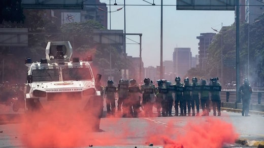

What started as a peaceful protest in Caracas was met with a shocking, shocking amount of tear gas today.
Some of it red.


Most large cities saw protest... And the situation remains tense
On March 28th, the Constitutional Chamber of the Supreme Tribunal issued Decision No. 155. It accused opposition deputies to the National Assembly of Treason -yes, treason- and urged the president to crack down on them and put them in jail. Almost as an afterthought, the Assembly members were unconstitutionally stripped of their parliamentary immunity.
..protests in areas of Caracas that seemed out of their reach since 2013: government bastions that were supposed to be No-Go areas for the opposition.
The following day, the same chamber issued Decision No. 156, authorizing the President to amend Venezuela's legislation on hydrocarbons and, again, almost as an afterthought, declaring that the National Assembly's constitutional prerogatives would henceforth be exercised by the Constitutional Chamber or by another body that Chamber appointed to that effect. Another draconian violation of the Constitution.
Demonstrations have been met with strong repression by the security forces. While the government continues to repeat the security forces are acting to stop acts of violence, the only protests that have been entirely peaceful have been the ones not repressed by the security forces. A large number of human rights violations have been reported, including many deaths. Seeing the unprecedented international reaction to the two decisions, MUD realized it couldn't settle for the Supreme Tribunal's "reviewed" decisions. MUD also demanded: general elections to be convened, the release of political prisoners, the opening of a humanitarian channel to address food and medicine shortages and respect for the constitutional autonomy of the National Assembly.

National Guards beat and arrest unconscious protester
Protesters encounter with National Guard
Hurt protester

Congressmen Manuel Olivares beat by military police
Represion has been nothing if not heavy handed
Saturdays protests were marked by even harder repression from State forces than we are used to. While media attention focuses mainly on Caracas, many parts Venezuela saw some serious action. Protest in el interior were not that big, but they were passionate and often strongly repressed by the security forces. Here is a roundup of the situation.